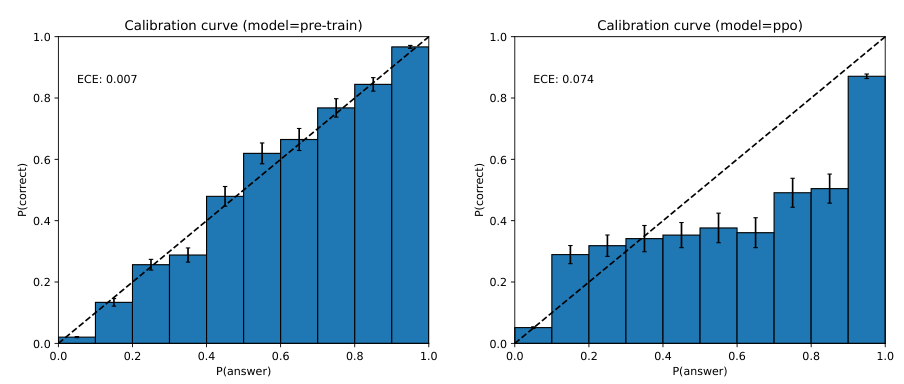

Post-training makes a model less able to tell when it's wrong
A base model's own probabilities track how often it is right, and the confidence a chatbot types out was never a reading of them.
Why this matters
Everyone who uses these systems has met the same voice answering a question it can handle and one it cannot, with no shift in tone to mark the difference. It is natural to read that steadiness as a sign the model has checked itself, and to trust the "I'm 95% sure" it will quote when asked. Neither is what it looks like. By the end of this you will be able to separate the two things a model means by confidence. One is the probability it computes over its next word, which can genuinely track how often it is right. The other is the confidence it prints in a sentence, which is written the same way its answers are. You will know why the step that turns a raw model into a helpful assistant trades away some of the honest signal, and why the reassuring number a chatbot volunteers on its own tells you little more than the steady tone does.
- 01
- A model builds a fake citation the same way it builds a true one: how a model produces false facts, the neighbor to tonight's question of why a false answer still sounds sure.
- 02
- The instant a model writes a token, it becomes fact: the token-by-token writing that the probabilities in this lesson come from.
The tone stays the same when the answer is wrong
Ask a model something it knows and something it does not, and the two answers come back in one voice: fluent, direct, evenly sure. A wrong answer arrives with the same composure as a right one. GPT-4's technical report says this about itself, listing among the model's limitations that it "can be confidently wrong in its predictions."1
Press the model on how sure it is and it will often go further, typing a figure: "I'm 95% sure." The figure looks like a reading off a gauge somewhere inside the model. It is not one. Two different quantities sit under the reply and are easy to mistake for each other. One is a number the model computes at every word as it writes. The other is the confidence it states in words. They are not the same measurement, and only one of them has any claim to being honest.
This is not the model inventing a fact. A model builds a false citation by the same process it builds a true one, and that is its own subject. It is not the model caving under pressure and switching a fixed answer to please, which is a different behavior again. The narrower question is why the confidence around a wrong answer, the assured tone and the quoted number alike, carries so little warning. Of the two quantities, only the one the model computes can be checked against how often it is right.
When 70 percent should mean 70 percent
Take the computed number first. At each step a model produces a probability distribution over which word, or token, comes next. Each token of the reply is drawn from the distribution at that step, the one-token-at-a-time writing a language model does. A distribution puts a probability on each candidate, and the model's confidence in the word it chose is simply the probability it placed on that word. This is confidence about the next token. It is not, on its face, confidence about whether a finished claim is true.
A probability like that earns the word honest only when it lines up with reality over many tries. The property has a name: calibration. A predictor is calibrated when, across all the times it says 70 percent, it turns out right about 70 percent of the time, and the same holds at 30 percent and at every level between. Guo and colleagues, who measured this for modern image classifiers in 2017, wrote the ideal exactly.2
You can see calibration on a plot. Put the model's stated confidence on one axis and how often it was actually right on the other, grouped into bins. A perfectly calibrated model traces the diagonal: in the 60-percent bin it is right 60 percent of the time. Any gap between a bar and the diagonal is miscalibration, and averaging that gap across the bins gives one score, the expected calibration error, where zero is perfect.2
The finding that made this pressing is that a better model is not automatically a better-calibrated one. Guo's group set a shallow network from the 1990s, LeNet, against a modern 110-layer network on the same 100-way image task. The deep network was far more accurate: it erred on about 31 percent of the test images against the shallow network's 45 percent. But its confidence had drifted well above its accuracy, while the old network's confidence still sat close to how often it was right.2 Depth and accuracy went up; the model's honesty about its own uncertainty went down.
Post-training flattens the honest number
A base language model, the kind that pre-training produces before it is shaped into a chatbot, tends to carry this honest signal. Anthropic's researchers found that large models answered multiple-choice and true-or-false questions with well-calibrated probabilities, as long as the question was posed in a format they could read cleanly.3 GPT-4's report shows the same for its own pre-trained model on a slice of a standard exam benchmark. Asked to pick A, B, C, or D, the base model's confidence lined up closely with how often it was right.1
Between that base model and the assistant a user talks to sits a step called reinforcement learning from human feedback. People rank the answers a model gives, and the model is then tuned to produce the answers people rank highest.4 The target is whatever a human labeler prefers: helpful, direct, agreeable replies. Truthfulness is not the target, and neither is a calibrated sense of doubt. Labelers preferred the answers of a tuned 1.3-billion-parameter model to those of the original 175-billion-parameter one, which shows how much the ranking rewards manner and helpfulness over raw size.4
That tuning carries a cost the GPT-4 report records in a single figure. It plots the same calibration curve twice, for the model before and after this step, on the same exam slice. Before, the bars sit almost on the diagonal. After, they pull below it: the post-trained model is steadily more sure than it is right.

The pre-trained model is highly calibrated. However, after the post-training process, the calibration is reduced.1 GPT-4 Technical Report, Section 5
Why the tuning does this is not settled, and it is worth being exact about which part is which. That it happens is measured. Why it happens is not: the report states the effect and stops there. A leading account comes from Tian and colleagues. They suggest the ranking objective pushes probability mass onto the single answer a labeler would most prefer, rather than spreading it to match how often each answer actually turns out right.5 That is a plausible reading of the cause, not a demonstrated one, and it belongs in the column of things researchers currently believe rather than have shown.
The model types its confidence the way it types everything else
Return now to the number the model types. When it writes "I'm 95% sure," it is not consulting the distribution from the last step and reporting what it found. The phrase is produced the way the rest of the sentence is, one token at a time, chosen to resemble the confident answers its training rewarded.5 No separate part of a standard chatbot checks the claim against the world and hands back a probability. The characters "95%" are generated text that happens to be shaped like a measurement.
This does not mean the model holds no usable sense of its own uncertainty. It means the printed words are not wired to one. The signal can be brought out with training. Given the right setup, a model can be taught to report the probability that it knows an answer, and it does this reasonably well inside a domain. The skill transfers only partly to new kinds of questions.3 A model can also be fine-tuned to state a confidence in words that maps to a calibrated probability, without reading its own token probabilities at all. The authors argue this works because pre-training leaves behind internal representations that correlate with how uncertain the model should be.6 The distribution over the next token is not the only trace of uncertainty inside the model. It is only the one that is always present by default, and it is about words.
Left to its defaults, though, a chatbot's spoken confidence is close to useless. Tested across five benchmarks, models asked to state a confidence tended to be overconfident and to bunch their numbers into a high, narrow band, plausibly copying the way people pad speech with certainty.7 That is the "95% sure" a user meets unbidden, and it carries little. The picture changes when the number is elicited on purpose. For chat models tuned with human feedback, Tian's group found that a numeric confidence the model is explicitly asked to give is often better calibrated than the model's own token probabilities. On their benchmarks, asking cut the expected calibration error by roughly half.5
The recovery is real and uneven. On the hardest, most misleading question set the gain was large; on a plain trivia set, where the raw probabilities were already near calibrated, asking for a spoken number barely helped.5 Some models verbalize better than others. Post-training degrades the useful signal rather than erasing it, and some of it can be recovered by asking in the right way, sometimes. How best to pull a trustworthy confidence out of a language model is an open research problem with many competing methods and no settled winner.8 What is settled is the part a reader needs at the keyboard: the tone is not evidence, and the unasked-for number is barely more.
The takeaway
A model carries two things a user hears as one. Underneath every reply is a probability over the next word, and in a base model that probability is fairly honest about how often the answer is right. The training that turns the model into a pleasant assistant, by rewarding the answers people prefer, flattens that honesty, and the assistant comes out more sure than it is correct. The confidence it says out loud was never that probability to begin with; it is generated text shaped to sound assured. So the steadiness in the voice, and the unrequested "I'm 95% sure," tell you almost nothing about whether the answer is right. A number you ask for deliberately can do better, sometimes, but the default tone is not the reading it appears to be.
- 01
- On Calibration of Modern Neural Networks: where calibration, reliability diagrams, and the calibration-error score are defined and measured for modern networks.
- 02
- Language Models (Mostly) Know What They Know: the study of which internal uncertainty signals a model does and does not carry, and how far they can be trusted.
Sources
- OpenAI · GPT-4 Technical Report
- Guo, Pleiss, Sun & Weinberger · On Calibration of Modern Neural Networks
- Kadavath et al. · Language Models (Mostly) Know What They Know
- Ouyang et al. · Training language models to follow instructions with human feedback
- Tian et al. · Just Ask for Calibration: Strategies for Eliciting Calibrated Confidence Scores from Language Models Fine-Tuned with Human Feedback
- Lin, Hilton & Evans · Teaching Models to Express Their Uncertainty in Words
- Xiong et al. · Can LLMs Express Their Uncertainty? An Empirical Evaluation of Confidence Elicitation in LLMs
- Geng et al. · A Survey of Confidence Estimation and Calibration in Large Language Models